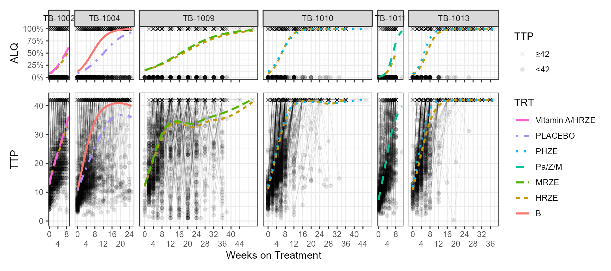

Code
library(ggplot2)
library(patchwork)
library(dplyr)
library(pBrackets)
library(tidyr)
TTPDATA <- read.csv("TTPDATA_Shiny_PRED.csv")
TTPDATA$CENS <- ifelse(TTPDATA$TTP==42,"≥42","<42")
TTPDATA$ALQ <- ifelse(TTPDATA$TTP>=42,1,0)
TTPDATAsubset <- TTPDATA %>%
filter(STUDY%in%c("TB-1002","TB-1004",
"TB-1009","TB-1010",
"TB-1011","TB-1013"))
a<- ggplot(TTPDATAsubset,
aes(WEEK,TTP))+
geom_line(aes(group=ID),alpha=0.1,linewidth = 0.2)+
geom_point(aes(shape=CENS),alpha=0.1)+
geom_smooth(aes(col=TRT,linetype=TRT),se=FALSE)+
scale_shape_manual(values=c("circle","cross"))+
guides(shape=guide_legend(reverse=TRUE,order=1),
linetype=guide_legend(reverse=TRUE,order=2),
color=guide_legend(reverse=TRUE,order=2)
)+
facet_grid(~STUDY,scales="free_x",space="free")+
theme_bw()+
theme(legend.key.height = unit(1, "null"),strip.clip = "off")+
scale_x_continuous(breaks = c(0,4,8,12,16,20,24,28,32,36,40,44),
guide = guide_axis(n.dodge=2))+
labs(x="Weeks on Treatment",shape="TTP")
b <- ggplot(TTPDATAsubset,aes(WEEK,ALQ))+
geom_point(aes(shape=CENS),alpha=0.1)+
geom_smooth(aes(col=TRT,linetype=TRT),
method = "glm",method.args = list(family = "binomial"),
se = FALSE ) +
scale_shape_manual(values=c("circle","cross"))+
guides(shape=guide_legend(reverse=TRUE,order=1),
linetype=guide_legend(reverse=TRUE,order=2),
color=guide_legend(reverse=TRUE,order=2)
)+
facet_grid(~STUDY,scales="free_x",space="free")+
theme_bw()+
theme(legend.key.height = unit(1, "null"),strip.clip = "off")+
scale_x_continuous(breaks = c(0,4,8,12,16,20,24,28,32,36,40,44),
guide = guide_axis(n.dodge=2))+
scale_y_continuous(labels = scales::label_percent(accuracy=1))+
labs(x="Weeks on Treatment",shape="TTP")
(b+theme(axis.title.x.bottom = element_blank(),
axis.text.x.bottom = element_blank())
)/
(a+theme(strip.background = element_blank(),
strip.text=element_blank()))+
plot_layout(guides = "collect",
heights = c(0.4,1))